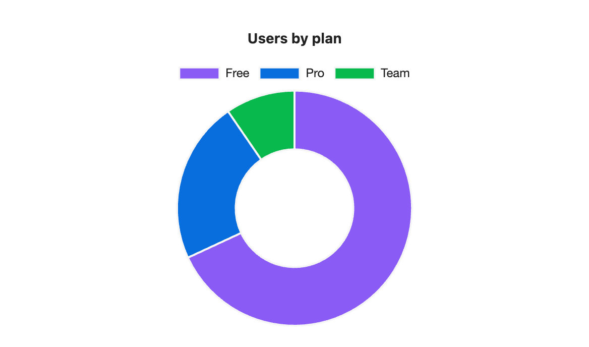
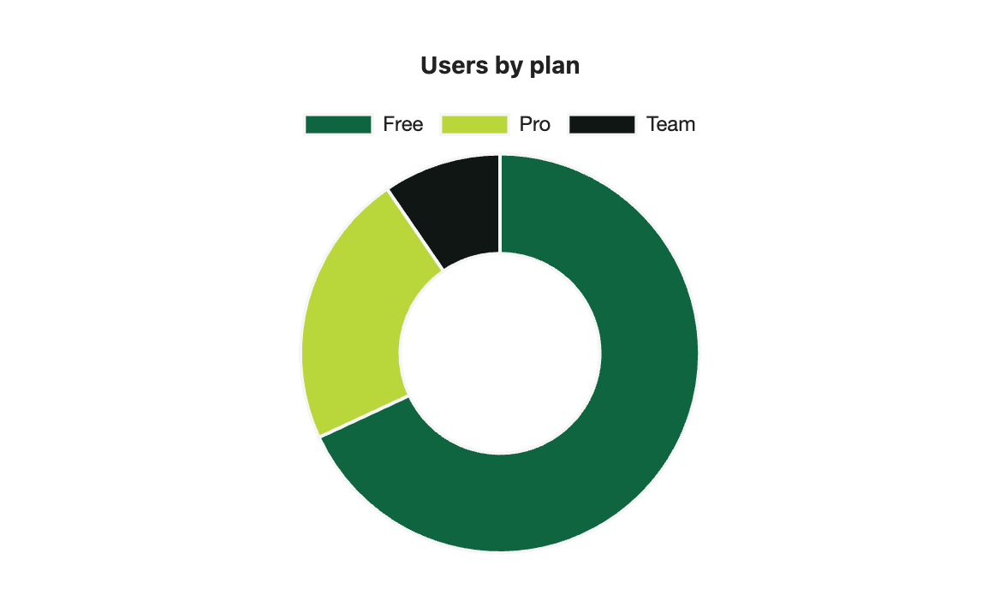

Doughnut chart
A doughnut is a pie with a hole in the middle. It reads the table the same way: one slice per row.

```s-chart
type: doughnut
title: Users by plan
---
| Plan | Users |
| ---- | ----- |
| Free | 6400 |
| Pro | 2100 |
| Team | 900 |
```When to use it
Use it where you would use a pie. Some people find the ring easier to compare than wedges.
Options
| Option | On a doughnut chart |
|---|---|
type: doughnut | Required. |
title | Text above the chart. |
legend | Lists the slices. top by default, or bottom or none. |
height | Chart height in pixels, 120 to 1200. |
colors | One colour per slice, in row order. |
palette | A palette from settings. |
source, x, y | Draw from note properties: one slice per note. |
stacked, horizontal, x-label and y-label have no effect. Like a pie, a doughnut draws only the first number column.
Your own colours
With colors, the slices take the colours in row order: Free, then Pro, then Team.

```s-chart
type: doughnut
title: Users by plan
colors: #0E653F, #B9D63A, #101614
---
| Plan | Users |
| ---- | ----- |
| Free | 6400 |
| Pro | 2100 |
| Team | 900 |
```